Spatially downscales coarse-resolution climate data
Usage
spatialdownscale(
climdata,
sst,
dtmf,
dtmm = NA,
basins = NA,
wca = NA,
skyview = NA,
horizon = NA,
cad = TRUE,
coastal = TRUE,
thgto = 2,
whgto = 2,
include_tmean = FALSE,
rhmin = 20,
pksealevel = TRUE,
patchsim = FALSE,
terrainshade = TRUE,
precipmethod = "Elev",
fast = TRUE,
noraincut = 0,
toArrays = FALSE
)Arguments
- climdata
a
climdatamodel object containing climate data of the same format asukcp18toclimarray- sst
a SpatRast of sea-surface temperature data (deg C) that overlaps with climdata$tme
- dtmf
a high-resolution SpatRast of elevations
- dtmm
a medium-resolution SpatRast of elevations covering a larger area than dtmf (only needed for coastal effects - see details under
temphrly_downscale()).- basins
optionally, a fine-resolution SpatRast of basins as returned by
basindelin()matching the coordinate reference system and extent ofdtmf. Calculated if not supplied.- wca
optionally, an array of wind shelter coeffs in 8 directions matching the x,y dimensions of
dtmfas calculated bycalculate_windcoeffs. Calculated if not supplied.- cad
optional logical indicating whether to calculate cold-air drainage effects
- coastal
optional logical indicating whether to calculate coastal effects
- thgto
height above ground of temperature output.
- whgto
height above ground of wind speed output.
- include_tmean
if TRUE and daily data will output mean daily temperature based on hourly downsccaling
- rhmin
minimum relative humidity (set to avoid relative humidity dropping too low during down-scaling). Default 20 (percent).
- pksealevel
optional logical indicating whether input pressure data represent sea-level pressure (default TRUE).
- terrainshade
optional logical indicating whether to account for terrain shading during shortwave radiation downscale.
- precipmethod
One of
TpsorElevindicating whether to account for elevation effects using a Thin-plate spline model or en emprical adjustment (see details underprecipdownscale())- fast
optional logical indicating whether to use fast Thin-plate spline down-scaling (see details under
precipdownscale()).- noraincut
numeric value below which low precipitation amounts are set to zero (see details under
precipdownscale()).- toArrays
if TRUE climate variables are output as 3D arrays if FALSE as Spatarasters
- pathsim
optional logical indicating whether to simulate cloud cover and rainfall patchiness see details under
swdownscale()andprecipdownscale().- difr
optional logical indicating whether to return diffuse radiation ( default TRUE).
Value
a list of multi-layer SpatRast or 3D arrays of downscaled climate variables and metadata as follows:
- dtm
Digital elevation of downscaled area in metres (as Spatraster)
- tme
POSIXlt object of times corresponding to climate observations
- windheight_m
Height of windspeed data in metres above ground (as numeric)
- tempheight_m
Height of temperature data in metres above ground (as numeric)
- temp
Temperature (deg C) - is replaced with
tmaxandtminif input data is daily andtmeanifinclude_tmean=TRUE.- relhum
Relative humidity (Percentage)
- pres
Sea-level atmospheric pressure (kPa)
- swrad
Total downward shortwave radiation (W/m^2)
- difrad
Downward diffuse radiation (W / m^2) - not returned unless
terrainshade = TRUE- lwrad
Total downward longwave radiation (W/m^2)
- windspeed
at 2m (m/s)
- winddir
Wind direction (decimal degrees)
- prec
Precipitation (mm)
Examples
dtmf<-terra::rast(system.file('extdata/dtms/dtmf.tif',package='mesoclim'))
dtmm<-terra::rast(system.file('extdata/dtms/dtmm.tif',package='mesoclim'))
climdata<-read_climdata(mesoclim::ukcpinput)
sst<-terra::unwrap(mesoclim::ukcp18sst)
mesodat<-spatialdownscale(climdata, sst, dtmf, dtmm, include_tmean=TRUE,noraincut=0.01)
#> Downscaling wind...
#> Downscaling temperature...
#> Downscaling relative humidity
#> Downscaling pressure...
#> Downscaling SW radiation...
#> Downscaling LW radiation...
#> Downscaling precipitation...
#> Formatting output...
for(n in 5:length(mesodat)) terra::plot(mesodat[[n]][[12]],main=paste(names(mesodat)[n],mesodat$tme[n]))
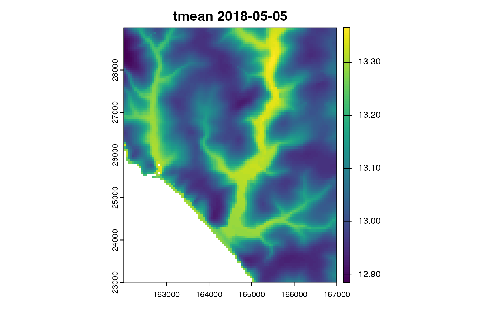
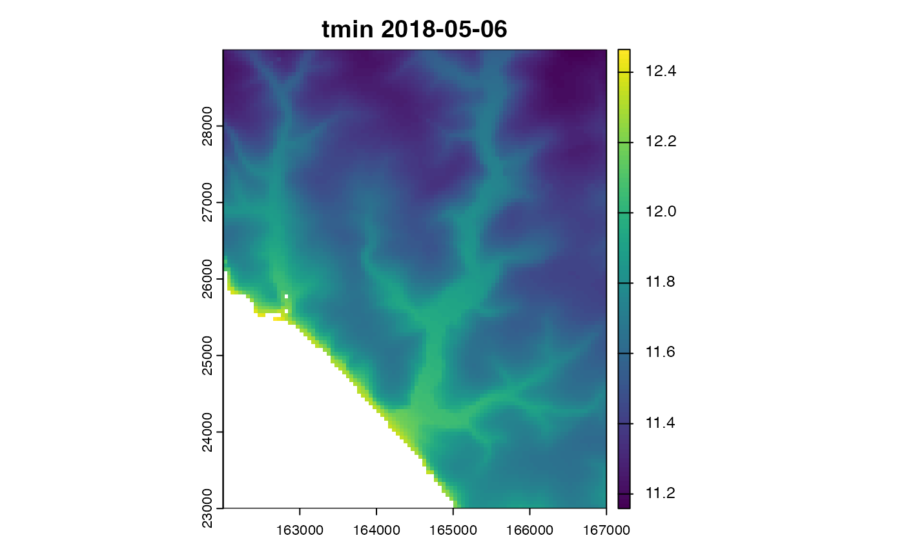
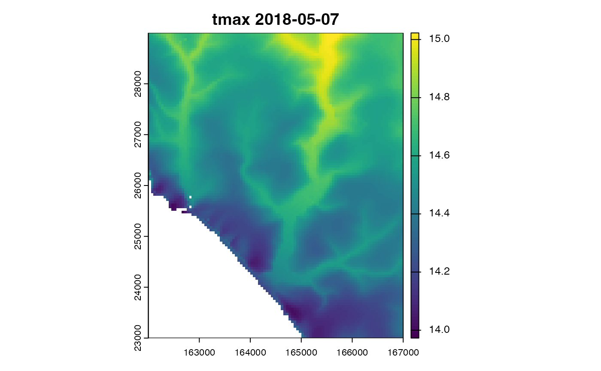
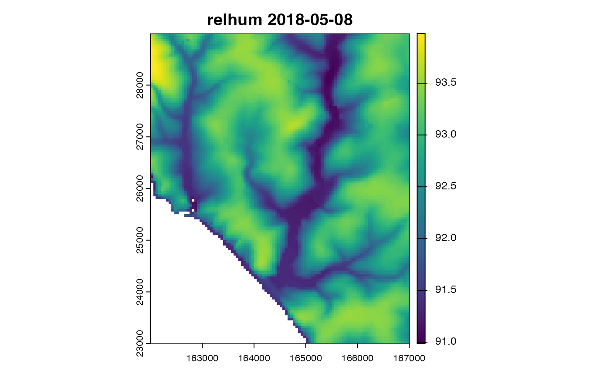
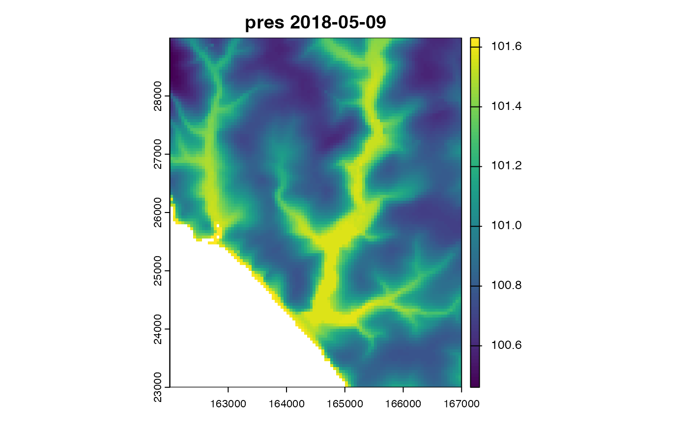
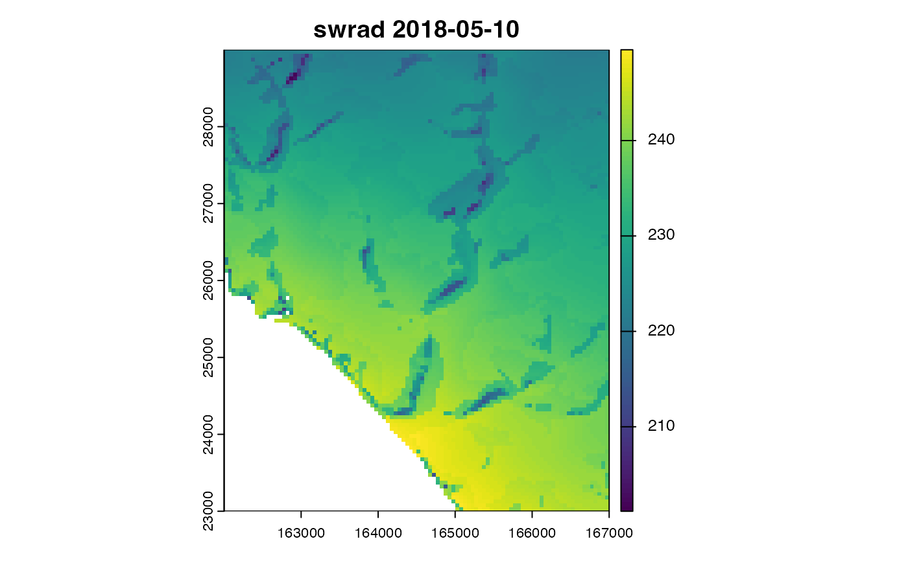
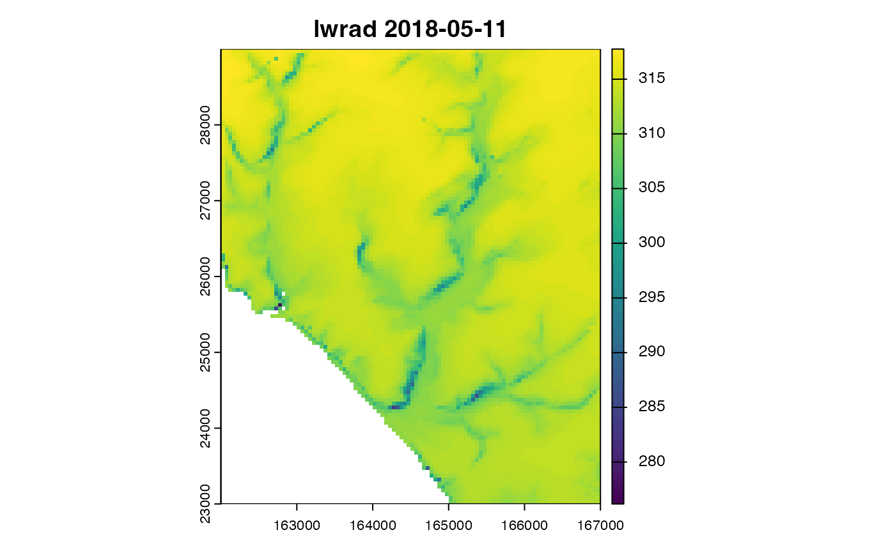
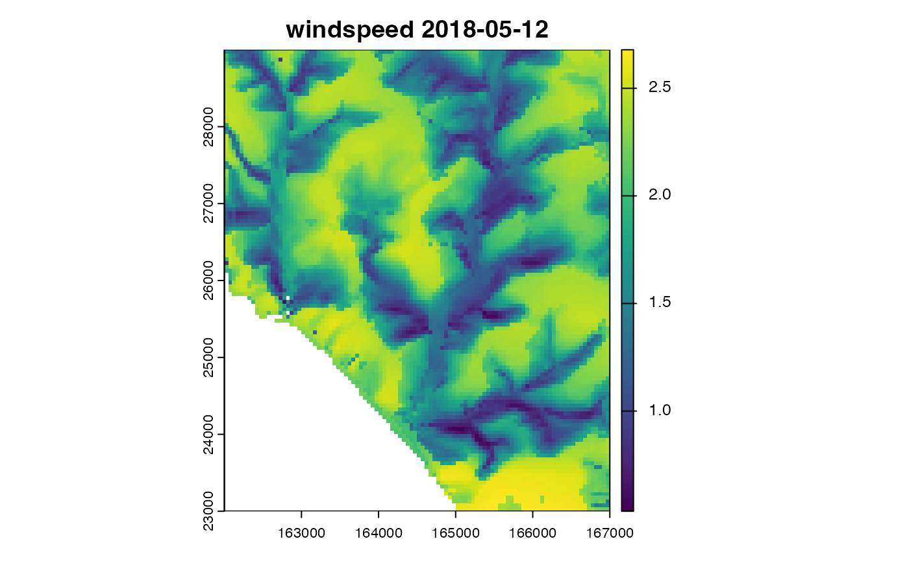
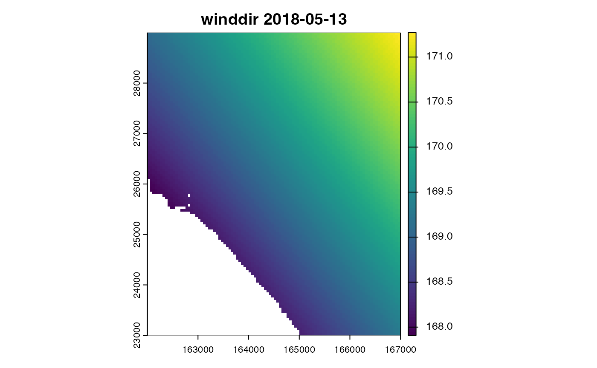
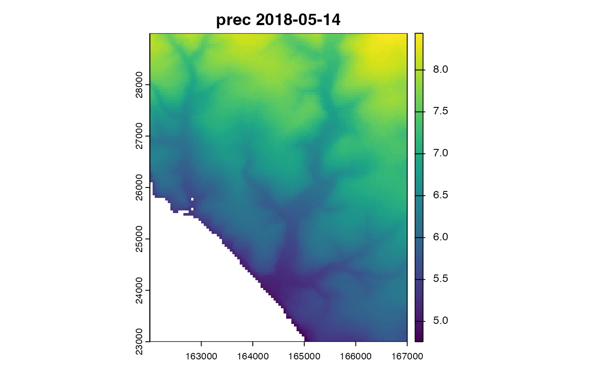
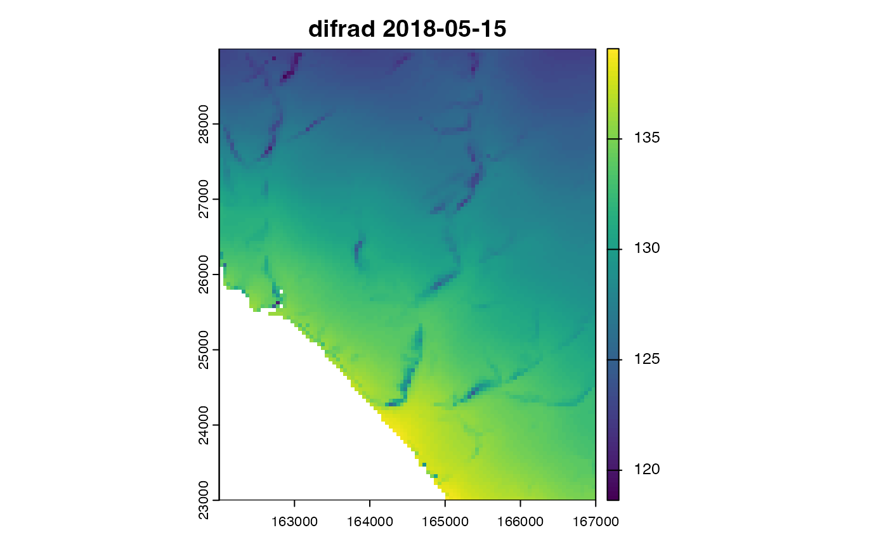